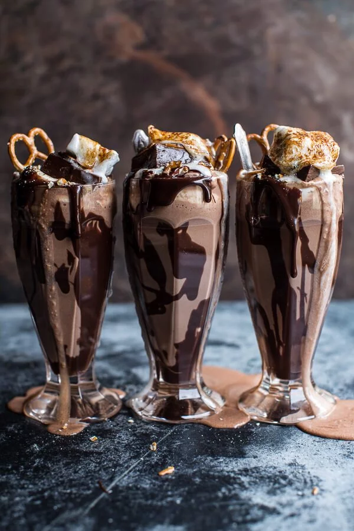

Salted Pretzel Nutella Fudge Milkshake

Total Time : 20 minutes
Ingredients
- NUTELLA FUDGE (OPTIONAL)
- 1 ounce can sweetened condensed milk 14
- 1 cup Nutella
- 8 ounces semi-sweet or dark chocolate chopped
- 3 tablespoons butter
- 1 teaspoon vanilla
- pretzel twists for topping
- 1/4-1/2 cup heavy cream
- MALTED MILK CREAM
- 1 cup heavy cream
- 2 tablespoons malted milk powder
- 1/2 of a vanilla bean seeds removed (optional)
- MILKSHAKE
- 1/4 cup any type of pretzels rounded
- 3/4 cup vanilla ice cream about 2 large scoops
- 1/3 cup Nutella
- 1/3 cup milk + more if desired
- 1 teaspoon vanilla extract
- Nutella fudge for serving (recipe below)
Directions
- Place the sweetened condensed milk, Nutella and chocolate chips in a heat proof bowl. Place in the microwave and melt on 30 second intervals until melted and smooth. Stir in the butter + vanilla. The fudge with be thick, but just keep stirring. Spoon all but 1/3 cup of the fudge into a parchment lined 8x8 inch square baking pan. Push pretzels onto the top of the fudge. Cover the pan and place in the fridge to set, this will take about 30 minutes. If in a hurry, place the fudge in the freezer for 10 minutes.
- Add the remaining 1/3 cup of fudge to a heatproof bowl and add 1/4 cup cream. Melt on 30 second intervals until smooth and the consistency of fudge sauce. If the sauce is too thick, add cream until the right consistency is reached. Warm the sauce before using.
- In a mixing bowl, whip the cream using and electric mixer until soft peaks form. Add the malted milk powder and vanilla and whip until combined. Store covered in the fridge.
- Add the pretzels to a blender and blend until they become fine crumbs. Add the ice cream, Nutella, milk and vanilla. Blend until smooth.
- Drizzle 2 glasses with warm Nutella fudge. Pour the milkshakes into the glasses and top with whipped cream, a square of fudge and a toasted marshmallow. Drink!!
Nutrition
Click here for more information.